City damage review
Unity editor captures. Tap a picture to see it full-size.
Building chips
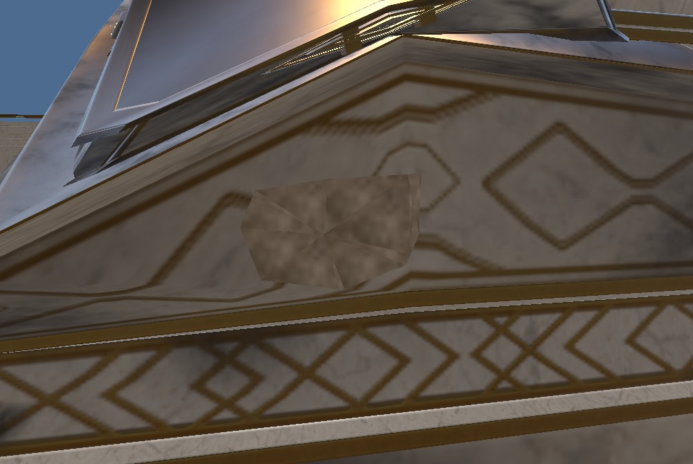
01 Stone broken out of a moulded façade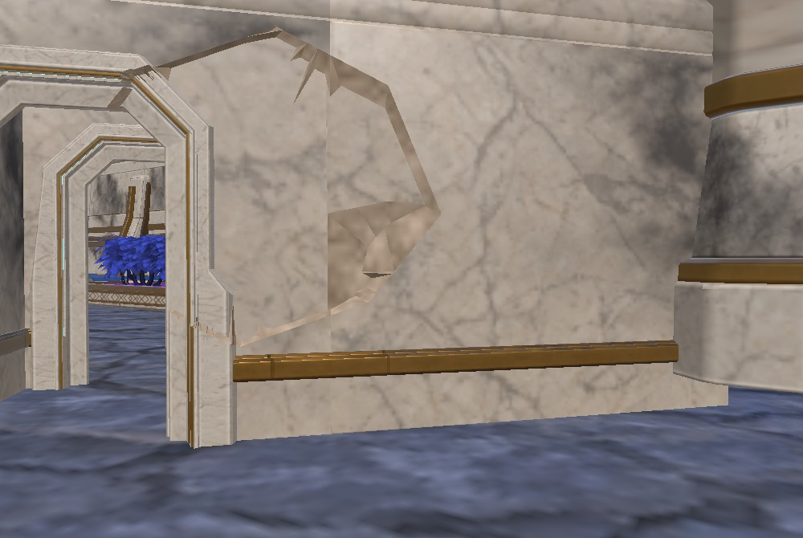
02 Exterior wall and window surroundColiseum
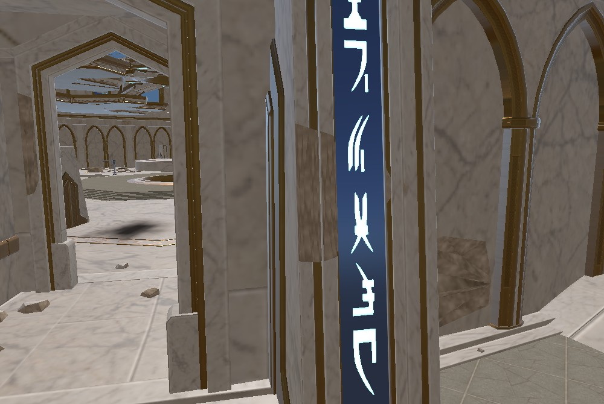
03 Doorway and adjacent wall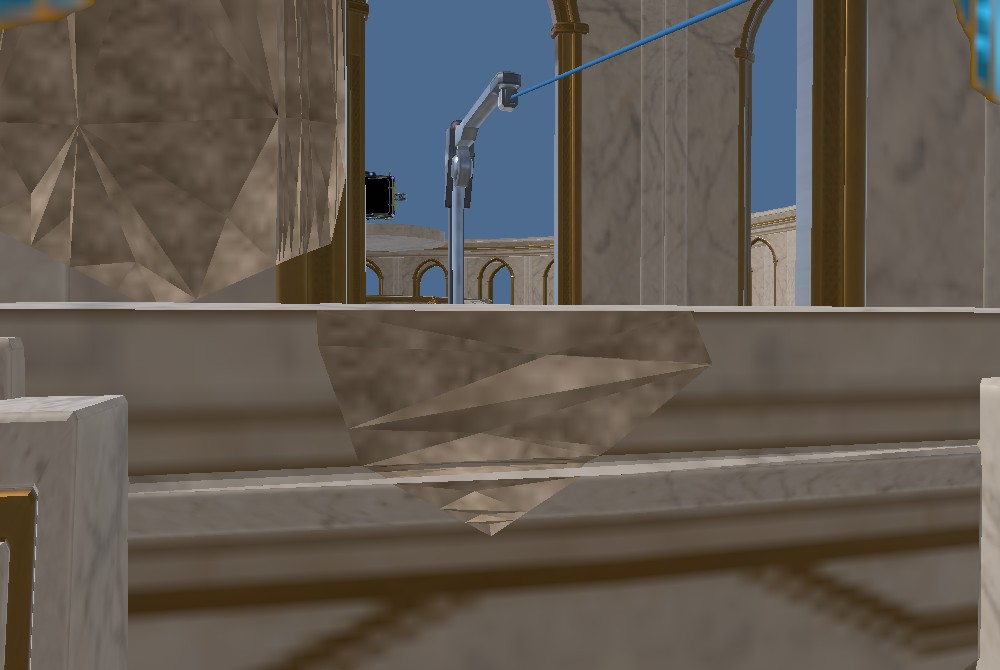
04 Chipped ramp edgeMain approach
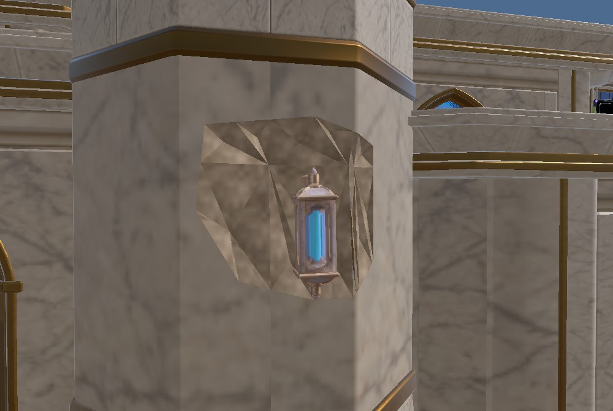
05 Side damage on the left-hand wall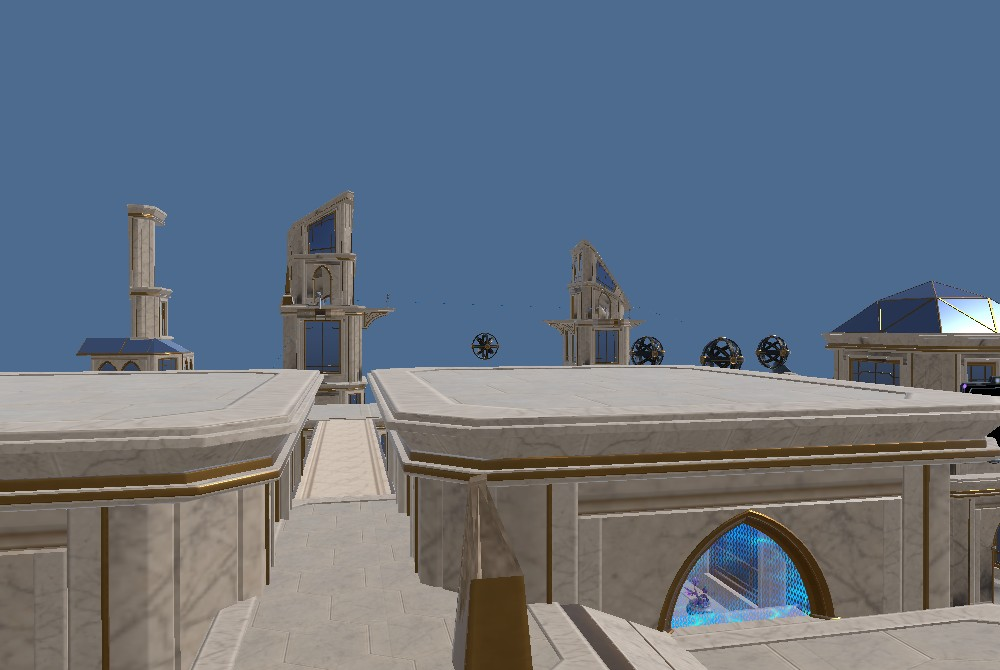
06 Break through the upper edgeGround scorch
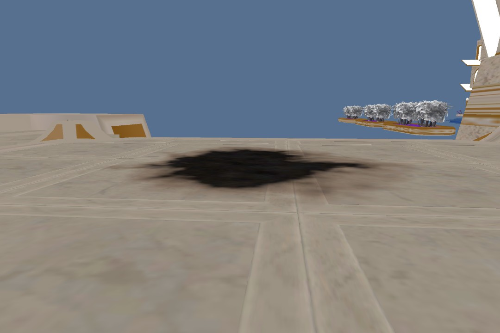
07 Dark centre on the city paving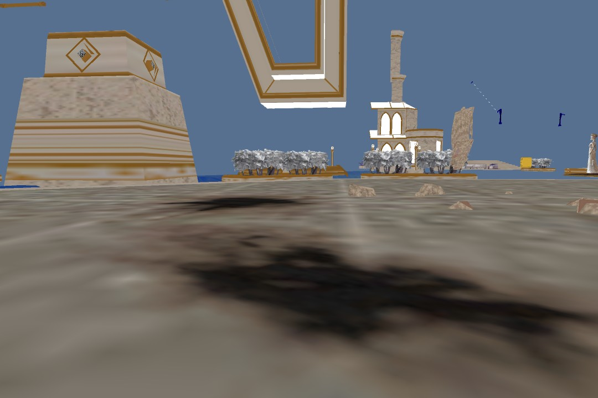
08 Scorch spread along the streetRestored towers
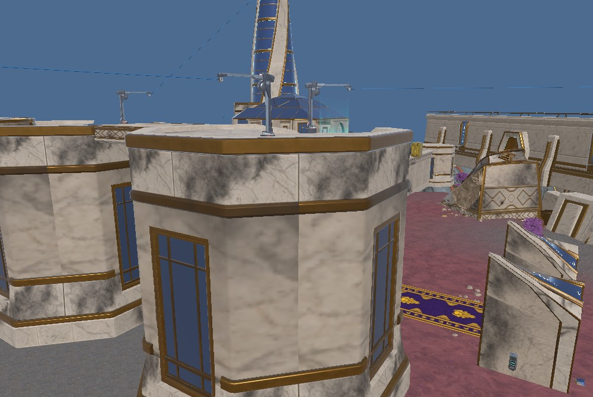
09 Restored octagonal roof from aboveWall scorch
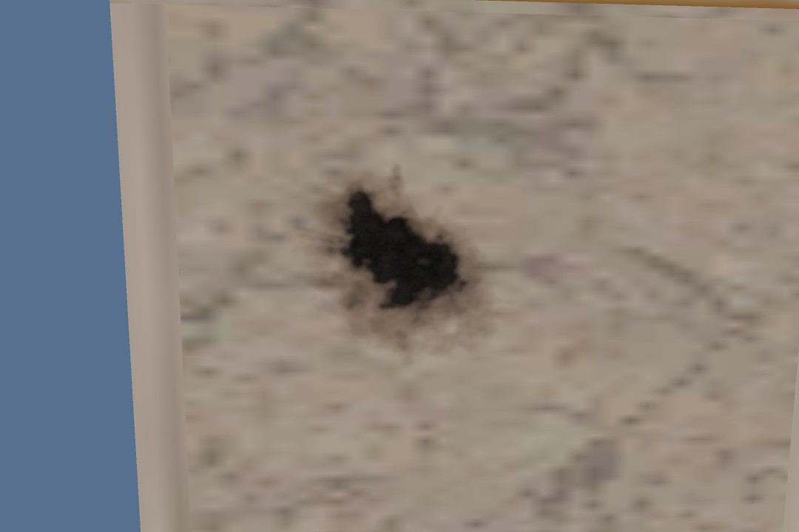
10 Char on a stone wall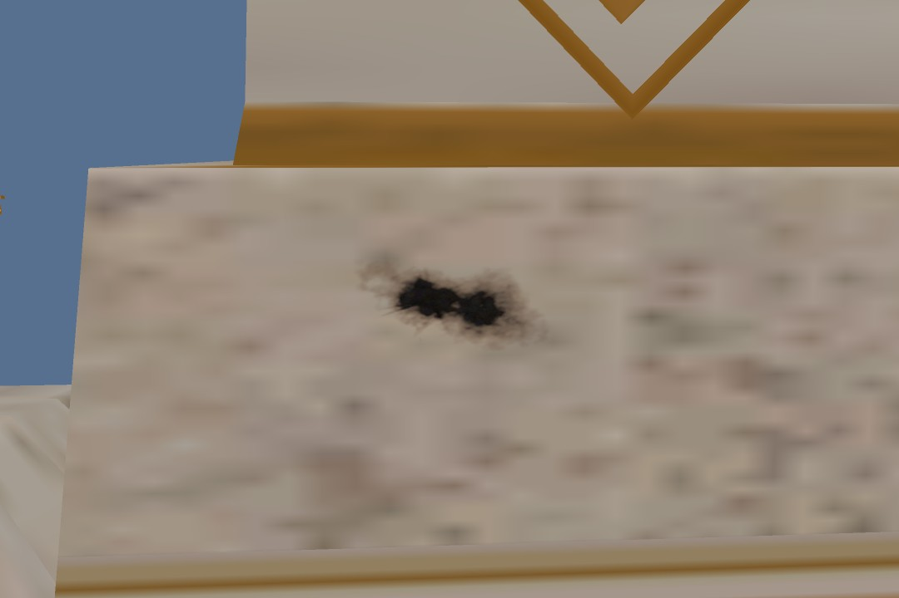
11 A smaller mark on a separate wall section